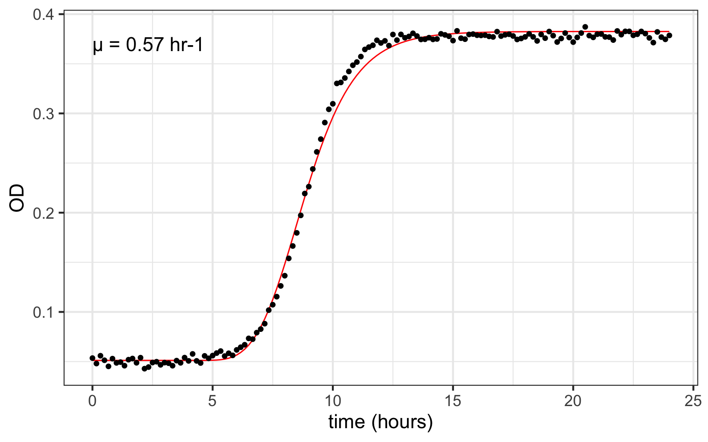
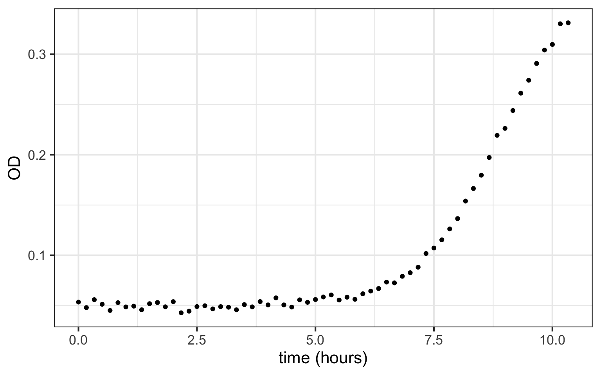
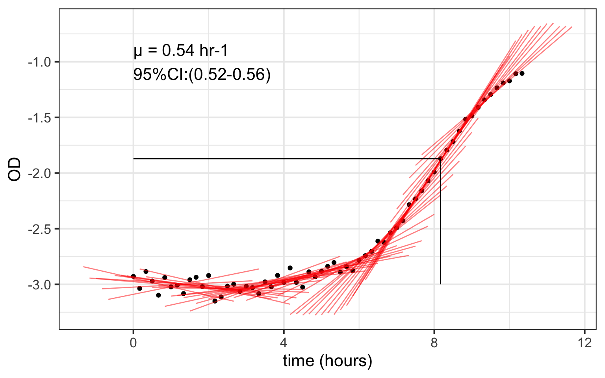

Rolling regression to estimate microbial growth rate
Calculating microbial growth rates from OD measurements using rolling regression in the tidyverse
R
bacteria
Author
Daniel Padfield
Published
November 15, 2019
Introduction
Microbial ecologists often measure the growth rates of their favourite microbes, commonly using an OD (optical density) reader, with growth being related to the increasing OD of the sample through time. There are loads of ways to analyse these curves. Most of these, like growthcurver and the methods I used in my recent ISME paper (nls.multstart and functions from nlsMicrobio), fit models to logistic growth. Both methods can easily be scaled up to fit multiple curves at the same time.
However, sometimes these methods do not do a good job. The most common example when this happens is if the wee critters do not reach stationary phase. Without stationary phase, most of the models will struggle to calculate carrying capacity, which also means the estimated exponential growth rate is poor. Similar things can occur if the bacteria form biofilms. This can result in increasingly noisy measurements at higher OD readings, again making the estimation of carrying capacity and growth rates more difficult.
As an alternative, we can bin off trying to model the entire growth curve, and instead implement a rolling regression, where we fit a linear regression on a shifting window of points. On natural-log transformed OD, the slope of the regression between \(logOD\) and time is equivalent to the exponential growth rate.
Get started
We will load (and install) all the packages needed to run the example here. We will use the example data from growthcurver as example OD readings from a 96-well plate. Time is in hours, and I have created stacked all the wells into a single column for OD. Finally I created a column for \(logOD\), which is needed for the rolling regression, and \(log_{10}OD\) which is needed for fitting the modified gompertz growth model from nlsMicrobio.
# load packageslibrary(tidyverse) #install.packages(tidyverse)library(zoo) #install.packages(zoo)library(broom) #install.packages(broom)library(growthcurver) # install.packages(growthcurver)library(nls.multstart) # install.packages(nls.multstart)# remotes::install_github('padpadpadpad/MicrobioUoE)# load example datad <- growthcurver::growthdata %>%gather(., well, od, -time) %>%mutate(ln_od =log(od),log10_od =log10(od))# have a look at the dataglimpse(d)
We will first demonstrate rolling regression against the modified gompertz model for growth. I like the inclusion of the lag parameter in this model, especially for OD readers where the initial inoculate can often be so low that the OD reader cannot measure it. It means that exponential growth is only calculated at OD readings that we are confident represent changes in biomass of the bacteria.
To do this, we’ll filter the data for just the first well, A1. Then we will fit the modified gompertz model and plot the results.
# filter for just a single welld_a1 <-filter(d, well =='A1')# define gompertz growth modelgompertz <-function(log10_nmax, log10_n0, mumax, t, lag){ log10_n0 + (log10_nmax - log10_n0) *exp(-exp(mumax *exp(1) * (lag - t)/((log10_nmax - log10_n0) *log(10)) +1))}# fit gompertz modelfit_gomp <- nls.multstart::nls_multstart(log10_od ~gompertz(log10_nmax, log10_n0, mumax, t = time, lag),data = d_a1,start_lower =c(log10_nmax =-0.75, log10_n0 =-3, mumax =0, lag =0),start_upper =c(log10_nmax =0.5, log10_n0 =-1, mumax =10, lag =25),lower =c(log10_nmax =-0.6, log10_n0 =-2, mumax =0, lag =0),iter =500,supp_errors ='Y')# get predictionsgomp_preds <-augment(fit_gomp)# plot on original scaleggplot(d_a1, aes(time, od)) +geom_line(aes(time, 10^.fitted), gomp_preds, col ='red') +geom_point() +theme_bw(base_size =16) +labs(x ='time (hours)',y ='OD') +annotate(geom ='text', x =0, y =0.37, label =paste('µ = ', round(coef(fit_gomp)[3], 2), ' hr-1', sep =''), hjust =0, size = MicrobioUoE::pts(16))

However, lets say our measurements end at 10 or 11 hours. When we have not reached stationary phase, the traditional bacterial growth models are likely to have trouble fitting.
d_a1 <-filter(d_a1, time <10.5)# plot data without stationary phaseggplot(d_a1, aes(time, od)) +geom_point() +theme_bw(base_size =16) +labs(x ='time (hours)',y ='OD')

Using rolling regression
Rolling regression allows us to calculate exponential growth rate even when we do not have the whole curve. First, we need to create our own rolling regression function. This method is mainly taken from G. Grothendieck’s StackOverflow answer. In the function, we specify our output from a standard lm object. So if you know how to access the output of lm(), you can add any extra details you want.
One of the big decisions in rolling regression is deciding how many points you are going to calculate the growth rate over. In this example, measurements are taken every 0.167 hours, about every ten minutes. I want a shifting window to span a minimum of 1.5 hours, so I calculate num_points to define the number of points the rolling regression will act on.
We then run the rolling regression, using zoo::rollapplyr() and dplyr::do(). Finally, in order to illustrate what the rolling regression is doing, I created a predictions dataframe for every single linear model that is fitted.
# create the rolling regression functionroll_regress <-function(x){ temp <-data.frame(x) mod <-lm(temp) temp <-data.frame(slope =coef(mod)[[2]],slope_lwr =confint(mod)[2, ][[1]],slope_upr =confint(mod)[2, ][[2]],intercept =coef(mod)[[1]],rsq =summary(mod)$r.squared, stringsAsFactors =FALSE)return(temp)}# define window - here every ~1.5 hoursnum_points =ceiling(1.5*60/(60*0.167)) # run rolling regression on ln od ~ timemodels <- d_a1 %>%do(cbind(model = dplyr::select(., ln_od, time) %>% zoo::rollapplyr(width = num_points, roll_regress, by.column =FALSE, fill =NA, align ='center'),time = dplyr::select(., time),ln_od = dplyr::select(., ln_od))) %>%rename_all(., gsub, pattern ='model.', replacement ='')# create predictionspreds <- models %>%filter(., !is.na(slope)) %>%group_by(time) %>%do(data.frame(time2 =c(.$time -2, .$time +2))) %>%left_join(., models) %>%mutate(pred = (slope*time2) + intercept)
We can plot the rolling regression through time. I have extracted the exponential growth rate as the maximum slope of any of the regressions. Reassuringly the value of \(\mu\) we get is very similar to that of using the gompertz model. I have also plotted the time at which the maximum slope occurred. It looks pretty close to mid-log to me.
# calculate the exponential growth rategrowth_rate <-filter(models, slope ==max(slope, na.rm =TRUE))# plot rolling regressionggplot(d_a1, aes(time, ln_od)) +geom_point() +geom_line(aes(time2, pred, group = time), col ='red', preds, alpha =0.5) +theme_bw(base_size =16) +geom_segment(aes(x = time, y =-3, xend = time, yend = ln_od), growth_rate) +geom_segment(aes(x =0, y = ln_od, xend = time, yend = ln_od), growth_rate) +annotate(geom ='text', x =0, y =-1, label =paste('µ = ', round(growth_rate$slope, 2), ' hr-1\n95%CI:(',round(growth_rate$slope_lwr, 2), '-', round(growth_rate$slope_upr, 2), ')', sep =''), hjust =0, size = MicrobioUoE::pts(16)) +labs(x ='time (hours)',y ='OD')

The opportunities are endless
The great thing about this approach is its flexibility. It can easily be rolled out over all the wells in that plate, using group_by().
# run rolling regression on ln od_cor ~ timemodels <- d %>%group_by(well) %>%do(cbind(model =select(., ln_od, time) %>% zoo::rollapplyr(width = num_points, roll_regress, by.column =FALSE, fill =NA, align ='center'),time =select(., time),ln_od =select(., ln_od))) %>%rename_all(., gsub, pattern ='model.', replacement ='')# calculate growth rate for each onegrowth_rates <- models %>%filter(slope ==max(slope, na.rm =TRUE)) %>%ungroup()
|===========================================|100% ~0 s remaining
These growth rates can then be used for downstream analyses, and the method can easily be used over multiple plates and for many different types of data. Finally, you could also filter the regressions by \(R^{2}\) values, making sure you only kept good fitting regressions. Or do a sensitivity analysis of different sized window sizes to make sure your chosen window is suitable.
How do you get your data off of the OD reader? I have written scripts to collate hundreds of plate readings into a single dataframe in R. Let me know if you would like me to do a blog post on that process! Thanks for reading.